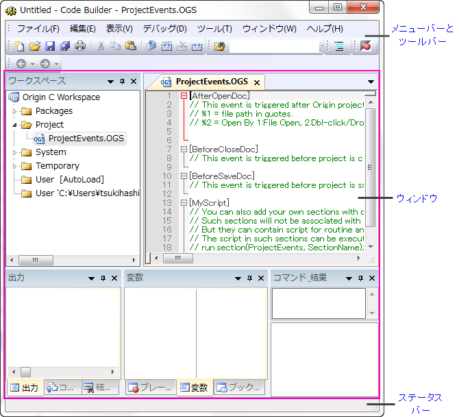

コードビルダ
Code-Builder
コードビルダは、Origin Cの統合的な開発環境です。Origin CのプログラムやLabTalkスクリプトを記述したり、コンパイルしたり、デバッグするための標準ツールを提供します。コードビルダを開くには、表示: コードビルダーを選択するか、標準ツールバーの  ボタン、あるいは、Alt+4キーを利用します。
OriginCプログラムとLabTalkスクリプトの開発に必要なものは全てこのウィンドウ内にあります。
ボタン、あるいは、Alt+4キーを利用します。
OriginCプログラムとLabTalkスクリプトの開発に必要なものは全てこのウィンドウ内にあります。
- 
- コードビルダのインターフェイスの上側パネルでコマンドやオプションを表示します。
- 詳しくはメニューアイテムとツールバーの紹介を参照してください。
- 真ん中のパネルは中心となるワーキングスペースです。OriginCを整理して開発したり、LabTalkスクリプトのデバッグも行えます。
- 詳しくはワークスペースのテキストエディタとその他のウィンドウを参照してください。
- LabTalkスクリプトのデバッグに関してはLabTalkのスクリプトのデバッグするを参照してください。
- 一番下のパネルはコードビルダのステータスやカーソルの位置を表示します。
- 詳しくはメニューアイテムとツールバーの紹介を参照してください。